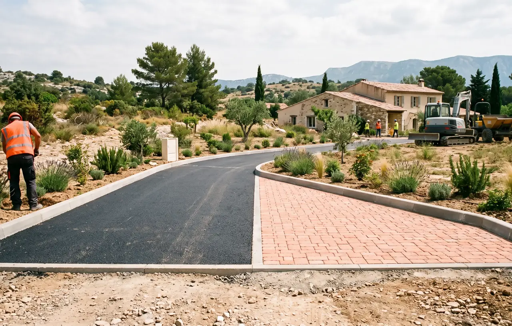
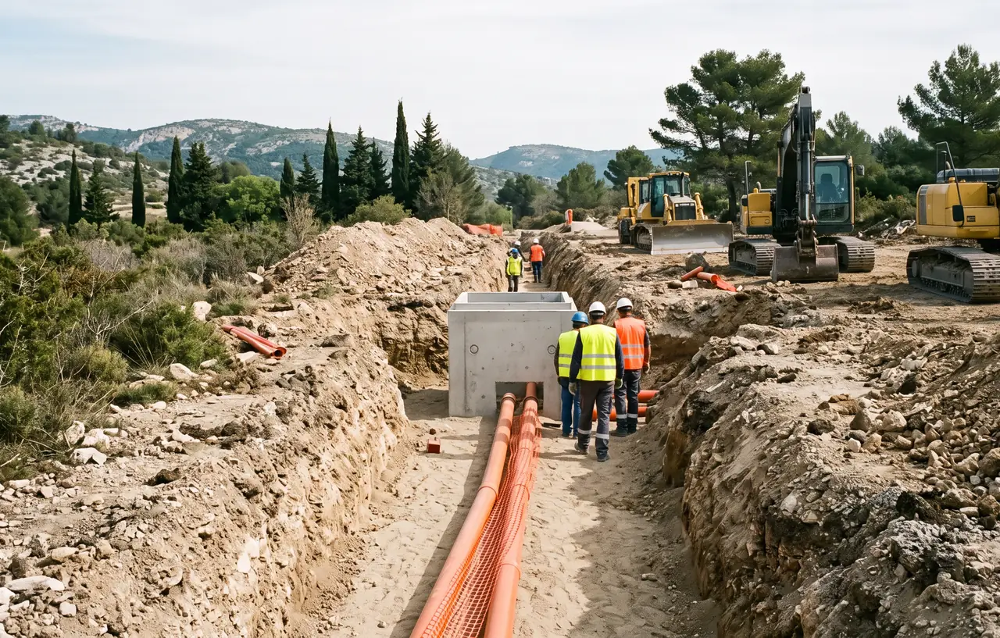

Votre Expert en Terrassement à Salon-de-Provence
Salon-de-Provence, ville de plus de 45 000 habitants, est l'un des pôles de croissance les plus dynamiques des Bouches-du-Rhône. Située en bordure de la plaine de la Crau, la commune bénéficie de terrains relativement plats composés de sols alluviaux avec des galets, graviers et limons déposés par les anciens cours d'eau. Ces caractéristiques géologiques rendent le terrassement plus accessible que dans les zones rocheuses, mais nécessitent tout de même une expertise professionnelle. STP Terrassement intervient depuis 15 ans sur Salon-de-Provence pour accompagner le développement de la ville. Les nouveaux lotissements qui poussent aux abords de la commune requièrent un terrassement rigoureux : décaissement précis, compactage contrôlé, mise en place du fond de forme et pose de géotextile pour assurer la stabilité des fondations. Nos pelles mécaniques et minipelles permettent un travail efficace sur ces terrains plats, avec nivellement laser pour une précision optimale. La gestion des déblais et du remblai est assurée dans le respect des normes environnementales. Retrouvez toutes nos zones d'intervention et nos réalisations.
Nos Services de Terrassement à Salon-de-Provence
Terrassement pour Fondations de Maison à Salon-de-Provence
Les terrains de Salon-de-Provence, constitués de sols alluviaux de la Crau, offrent généralement une bonne portance pour les fondations. Toutefois, la présence de poches d'argile ou de galets roulés peut nécessiter des adaptations. Notre équipe procède au décapage de la terre végétale, au décaissement aux cotes du projet et au creusement des fouilles en rigole pour les semelles de fondation. Le fond de forme est préparé avec un empierrement calibré et un compactage contrôlé au nivellement laser. Sur les terrains où l'étude de sol G2 révèle des couches instables, nous adaptons la profondeur des fouilles et renforçons le remblai avec des matériaux drainants. La pose de géotextile complète la préparation.
- Implantation et traçage selon plans architecte
- Fouilles en rigole et fouilles en pleine masse
- Préparation fond de forme sur sol alluvial
- Évacuation des gravats et galets
- Compactage contrôlé et empierrement
- Pose de géotextile de séparation
Bon à savoir : Les terrains plats de Salon-de-Provence facilitent le terrassement et réduisent les coûts par rapport aux zones rocheuses. Cependant, une étude de sol G1/G2 reste indispensable pour identifier les éventuelles poches d'argile sous la couche de galets.


Décaissement et Nivellement de Terrain à Salon-de-Provence
Même sur les terrains apparemment plats de Salon-de-Provence, le nivellement est essentiel pour garantir l'écoulement correct des eaux de pluie et la planéité nécessaire à votre construction. Nos équipes utilisent le nivellement laser pour détecter et corriger les micro-dénivelés invisibles à l'oeil nu. Le décaissement permet de retirer la couche de terre végétale et d'atteindre la couche portante composée de galets et graviers de la Crau. Les déblais de bonne qualité sont stockés pour réutilisation en aménagement paysager. Le compactage est réalisé par couches avec contrôle de la densité, et l'empierrement assure une surface stable et drainante.
- Décapage de la terre végétale et stockage
- Correction au nivellement laser haute précision
- Création de plateformes pour lotissements
- Compactage contrôlé et empierrement
- Gestion des pentes pour drainage naturel
Nos Autres Prestations de Terrassement à Salon-de-Provence

Excavation Piscine à Salon-de-Provence
Le climat ensoleillé de Salon-de-Provence rend la piscine quasi indispensable. Nos pelles mécaniques creusent avec précision dans les sols alluviaux de la Crau. Le fond de forme est préparé avec empierrement drainant et compactage. Évacuation des déblais et galets incluse.
- Terrassement piscine coque et béton
- Excavation sur sol alluvial
- Évacuation des déblais
- Nivellement du fond de forme
- Drainage périphérique

Préparation de Terrain Constructible
Salon-de-Provence accueille de nombreux programmes neufs et lotissements. Nous préparons vos terrains avec décaissement précis, remblai technique calibré et compactage contrôlé. La planéité naturelle des terrains de la Crau est un avantage pour des chantiers rapides et efficaces.
- Décaissement à la cote projet
- Remblai technique et compactage
- Pose de géotextile
- Fond de forme stabilisé
- Préparation voiries lotissement

Tranchées pour Réseaux VRD
Ouverture de tranchées techniques pour raccordements eau, assainissement et télécommunications dans les nouveaux quartiers de Salon-de-Provence. Remblai soigné avec compactage par couches. Coordination avec nos services VRD.
- Tranchées VRD aux normes
- Remblaiement contrôlé
- Pose grillage avertisseur
- Compactage par couches
- Coordination concessionnaires
Questions Fréquentes sur le Terrassement à Salon-de-Provence
Quel est le type de sol à Salon-de-Provence ?
Salon-de-Provence se situe en bordure de la plaine de la Crau, avec des sols alluviaux composés de galets, graviers et limons. Ces sols offrent généralement une bonne portance mais peuvent contenir des poches d'argile. Demandez un devis gratuit.
Combien coûte un terrassement à Salon-de-Provence ?
Le prix d'un terrassement à Salon-de-Provence varie entre 20€ et 50€ par m³. Les terrains plats de la Crau sont plus faciles à terrasser que les zones rocheuses, ce qui réduit les coûts. Demandez votre devis gratuit.
Intervenez-vous sur les lotissements neufs à Salon ?
Oui, STP Terrassement intervient sur les nombreux lotissements neufs de Salon-de-Provence. Nous réalisons le terrassement complet : décaissement, fondations, tranchées VRD et préparation des voiries internes des lotissements.
Le mistral affecte-t-il les travaux de terrassement ?
Le mistral, très présent à Salon-de-Provence, peut soulever la poussière et assécher rapidement les sols. STP Terrassement adapte son planning et ses méthodes de compactage en fonction des conditions météorologiques pour garantir la qualité des travaux. Contactez-nous.
Pourquoi Choisir STP Terrassement à Salon-de-Provence ?
Bien que située à 35 km d'Aix-en-Provence, Salon-de-Provence fait partie intégrante de notre zone d'intervention. Notre connaissance des sols alluviaux de la Crau et notre expérience sur les lotissements neufs font de nous le partenaire idéal pour votre projet de terrassement. Garantie décennale, devis gratuit sous 24h, parc matériel complet : minipelle, pelle mécanique, nivellement laser. Plus de 200 chantiers réussis dans les Bouches-du-Rhône.
Services Complémentaires
VRD & Assainissement
Après le terrassement, raccordez votre terrain aux réseaux (eau, électricité, égouts).
DécouvrirAménagement Extérieur
Finalisez avec une allée, une cour en enrobé ou des bordures professionnelles.
DécouvrirDémolition
Besoin de démolir avant de terrasser ? Nous gérons la démolition et l'évacuation.
Découvrir